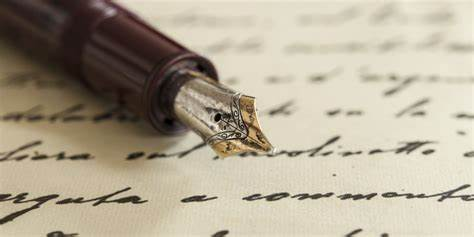
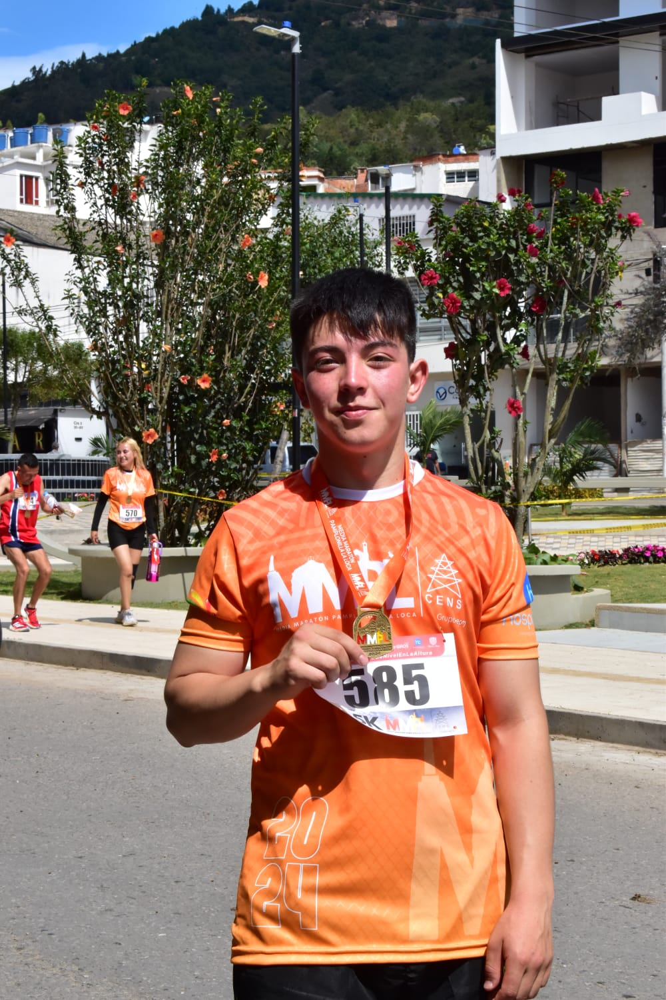
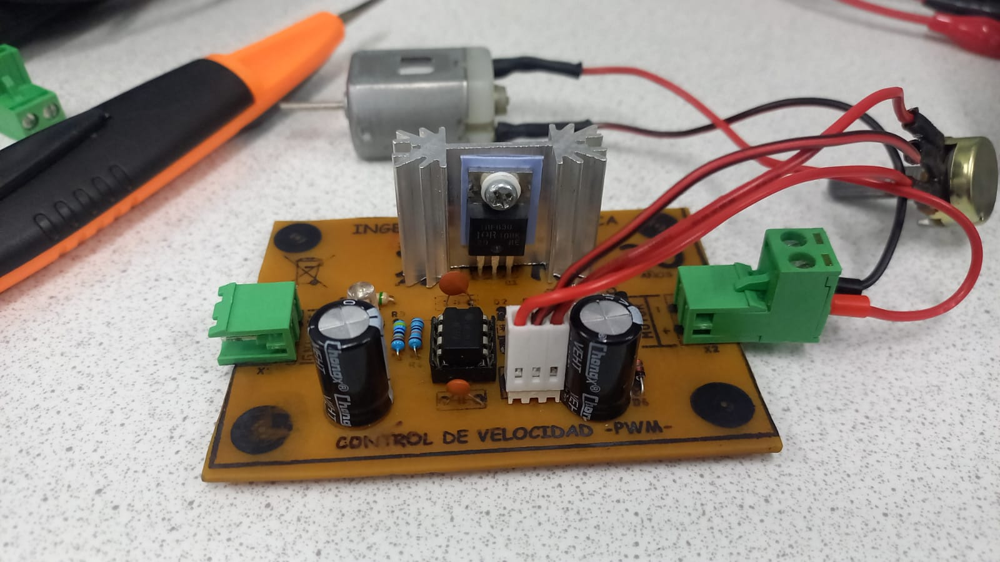
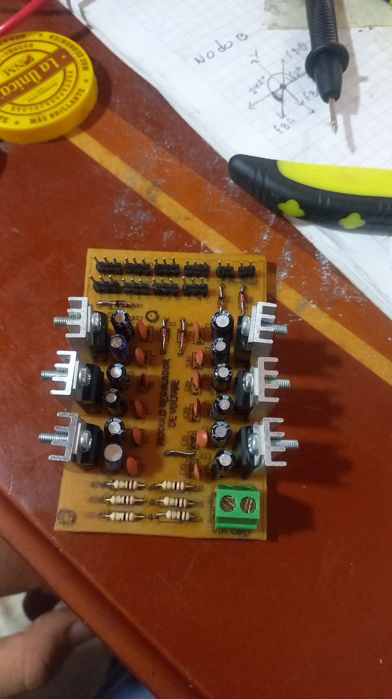
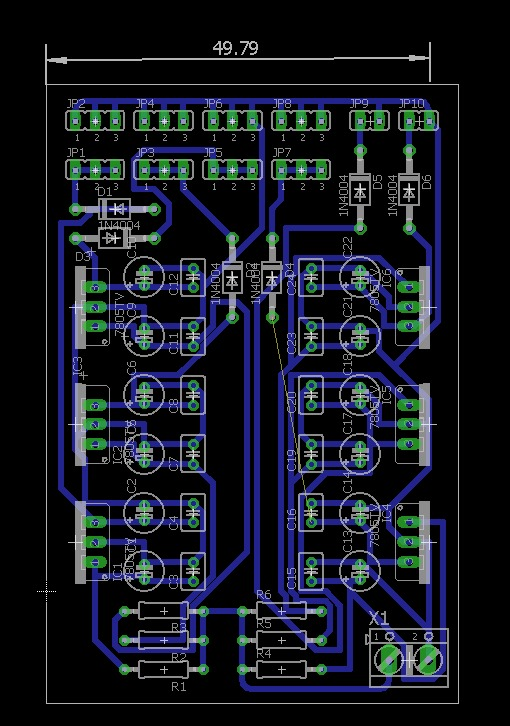

Duvan Florez Contreras
Soy Duvan Dario Florez Contreras, estudiante de ingenieria mecatronica de la Universidad de Pamplona, soy proveniente del municipio de Silos y tengo gran afición por la programación, la fisica y el diseño electronico.
Mis redes sociales
Mis Pasatiempos
Lectura y Escritura
Siento gran afición por la literatura clasica, pues siento que sus escritos transmiten emociones y pensamientos de manera más profunda y realista. Me gusta leer libros de autores como Edgar Alan Poe. por otra parte me gusta escribir poesia, pues siento que es una forma de dejar que el alma se exprese.
Runner y gym
Siento gran afinidad por los deportes ya que ellos nos ayudar a salir un poco de nuestra rutina y despejarnos, el ejercicio no es solo una forma de tener un cuerpo sano, tambien nos ayudan a tener una mente sana.
Diseño electronico
Desde niño siempre me senti atraido hacia la electronica, por lo que comence a aprender de ella a temprana edad por lo que conozco bien el tema y me gusta despejarme creando proyectos y diseñando circuitos para diferentes aplicaciones.
  Copyright ©2024; Designed by Duvan Florez el chico Python